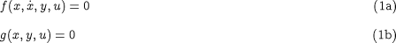
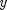
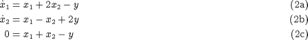
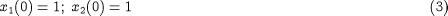
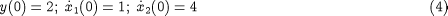
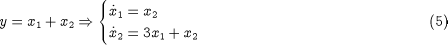

to eliminate from and , yielding:
to eliminate from and , yielding:It can be shown that most DAE systems of the form:

are similar to ODEs in several ways. In particular, one can specify as many arbitrary initial conditions as there are differential variables
are similar to ODEs in several ways. In particular, one can specify as many arbitrary initial conditions as there are differential variables in the system. Moreover, give values for , we can solve for  (usually numerically), then substitute in , essentially converting to a set of ODEs in .
These points can be illustrated with a simple example:

Here we have two differential variables and one algebraic variable. We can clearly specify two arbitrary initial conditions, e.g.:

from which we can calculate:

In fact, we can use to eliminate from and , yielding:

which is simply a set of two ODEs in  and
and  . Overall, then, the DAE system behaves very similarly to an ODE one.
. Overall, then, the DAE system behaves very similarly to an ODE one.